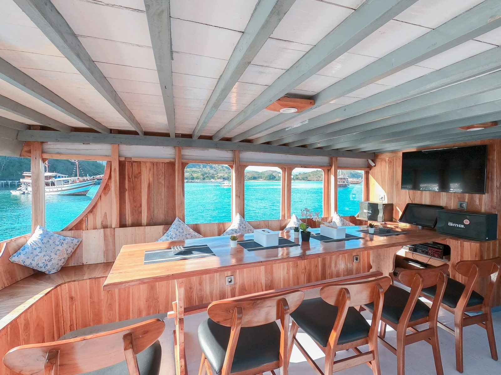
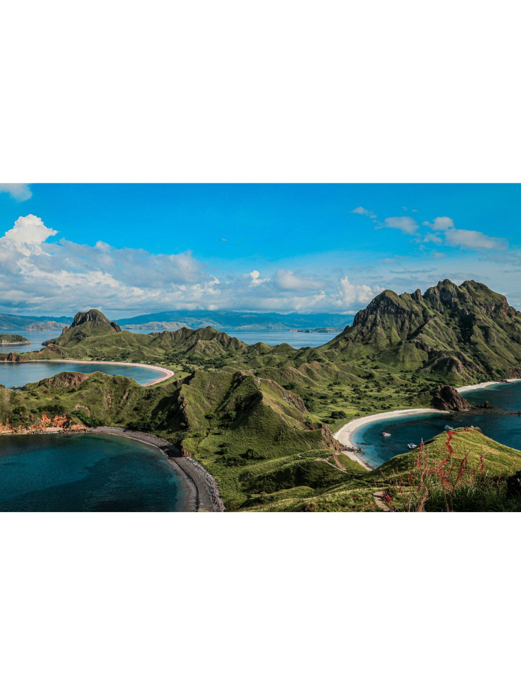

By Gabs, Founder of That Girl Experiences · Updated November 2026
What Is A Komodo Liveaboard?
Instead of long day trips from Labuan Bajo, a liveaboard lets you wake up anchored next to the next island. You'll be first to the viewpoints at sunrise, swim off the boat in the afternoon and watch the sunset from the deck. Most Komodo liveaboards run 2-4 nights and visit the national park's highlights.
The Highlights You'll See
Padar Island
The famous three-bay viewpoint, best at sunrise before the heat kicks in.
Pink Beach
Soft pink sand (from tiny red coral fragments) and great snorkelling right off the shore.
Komodo Dragons
See the world's largest lizards in the wild with a park ranger on Komodo or Rinca island.
Manta Rays
Komodo's currents bring plankton-rich water that attracts mantas, and snorkellers can often see them from the surface.

Why A Women-Only, Private Boat?
- The whole boat is ours. No sharing with strangers, couples or party groups.
- 2 girls per cabin, each with its own en-suite bathroom, hot shower and AC.
- Safe and easy solo. Most of our girls come solo and are matched with a roommate through our Travel Identity™ system.
- More than sightseeing. Becoming HER adds yoga and pilates, vision boards and growth workshops, so you come home with more than photos.
Getting To Labuan Bajo
Fly into Labuan Bajo Airport (LBJ). There are direct flights from Bali of about an hour. We handle your airport pickup when you land. You can also add our 8-day ISLAND LIFE Girls Trip in Bali beforehand.

Becoming HER - Sailing Komodo Islands
6 days from Labuan Bajo on a private liveaboard just for our girls: Pink Beach, Padar, Komodo dragons, mantas, yoga & growth workshops.
See Dates & Details →Is Komodo Good For Solo Female Travellers?
Yes, especially on an organised small-group trip. Komodo is remote, boats and permits take planning, and solo travellers often end up paying more on shared boats. Travelling with a women-only group gives you safety, company and someone to take your Padar photos.
Frequently Asked Questions
How many days do you need in Komodo?
Most travellers spend 3-6 days, including at least 2-3 nights on a boat. Our Becoming HER trip is 6 days and 5 nights from Labuan Bajo.
Is a Komodo liveaboard safe for women?
Yes, with a reputable operator. Our trip is women-only on a private boat with an experienced crew, guides and park rangers for the dragon walks.
Can you swim with manta rays in Komodo?
Yes. Komodo National Park is one of the best places in Indonesia to snorkel with manta rays, although wildlife sightings can't be 100% guaranteed.
How do I get to the Komodo Islands?
Fly into Labuan Bajo Airport (LBJ) in Flores, about 1 hour from Bali. Liveaboards and boat trips depart from Labuan Bajo harbour.
Do I need to be a strong swimmer?
No. All snorkelling equipment is provided and guides are with you. Basic swimming ability is recommended and beginners are welcome.
Come Solo, Leave With Besties
Women-only small-group trips with everything planned: Small Groups (8-10 women max), 2 girls max per room, never hostels or dorms.
See Our TripsFind Your Travel Identity™